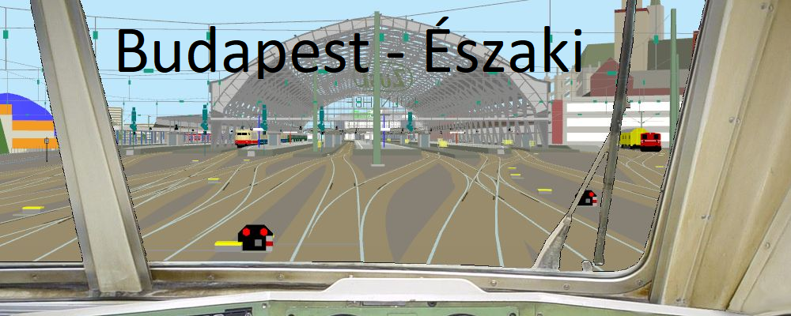
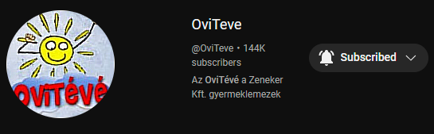

Kijön az új Szinusz/Koszinusz plays
2023. 02. 12-én lett felvéve az új Szinusz/Koszinusz plays Inverz Ackermann társaságában. A műsor során a két gyökér egy vonatot próbál meg vezetni, figyelve a sebességkorlátokra, a jelzőkre, és főleg a fél percenként előforduló szívfaszra, amelyek figyelembe nem vétele a vonat azonnali vészfékezésévell jár. A műsor során megfigyelhetjük, ahogy Szinusz túlmegy az állomáson, visszatolat túlságosan, aztán harmadszorra csak sikerül megállnia a megállóban, majd Koszinusz a szívfasz elkerülése érdekében véletlenül nem a Space-re hanem valami másra nyom, amitől az egész vonat leáll, és utána három percig végignézhetjük, ahogy Inverz Ackermann próbálja újraindítani a vonatot.
A tét

Szinusz és Koszinusz a só előtt megegyeznek, hogy aki többet késik, az a következő adásban többet fog játszani az I wanna be the guy
nevű játékkal és a vesztes feliratkozik egy hétig az ovitévé nevezetű csatornára. Így esett meg, hogy Koszinusz most még napig fel lesz iratkozva az ovitévé csatornájára.